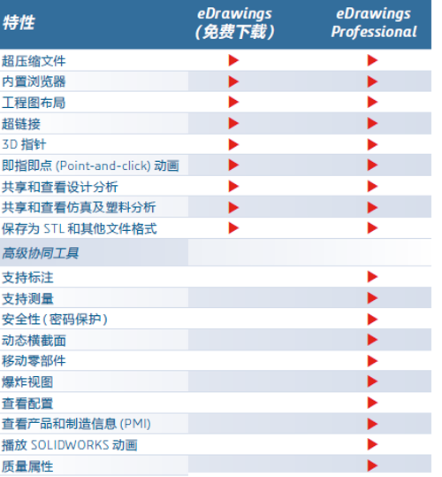
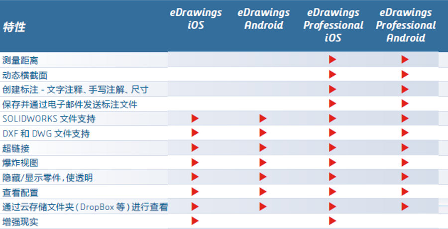

eDrawings功能
您可以利用 eDrawings 执行下列操作：
- 平移、缩放、旋转 、动画、爆炸
- 专业版还允许测量、添加标注、插入横截面
- 专业版还虚拟现实 (VR) 中查看模型
功能矩阵
 文件格式支持功能

功能-视图
重置
重置 工具将模型或工程图返回到其打开时的状态。 当您单击 时，所有旋转、平移、零部件移动、及方位更改全部撤消。
动画
爆炸
您可显示在 eDrawings 中打开的 CAD 应用程序的装配体文档的爆炸视图信息。
移动
移动工具让您可以在装配体文件或装配体的工程图文件中移动零部件。eDrawings 将忽略配合，允许您自由移动零部件。 您也可将子装配体作为一个单元来移动。
功能-评估
测量
测量 工具测量零件、装配体、及工程图文档中的准确尺寸。
剖面
戳记
将戳记图象添加到文档。
质量
您可以显示 eDrawings 零件和装配体文件的质量。 您还可以指定计算质量的单位和精度。 在装配体中，为整个装配体而不是单个零部件计算质量。
属性
您可在 eDrawings 中查看 SOLIDWORKS 文件的自定义属性和配置特定属性。
标注
3D视图
eDrawings 支持零件 (.eprt) 和装配体 (.easm) 中的 3D 视图。
注解
eDrawings 支持注解视图。
零部件
您可以使用 零部件 窗格上的组件树以管理装配体文件组件
OLE 对象
在工程图文档保存为 eDrawings 文件时，嵌入 OLE 对象在 eDrawings 中可见。 您可以将 eDrawings 文件作为 OLE 对象嵌入 Microsoft Word 和 PowerPoint 文件中。
1、OLE 对象在 eDrawings 中为只读，您无法双击将其打开。
2、OLE 对象只在 SOLIDWORKS 文档中出现的图纸中显示。 例如，OLE 对象在 eDrawings 中生成的布局图纸上不可见。
3、eDrawings 零件和装配体中的 OLE 对象为静态项目；它们不随模型移动。
功能-虚拟现实VR
Microsoft Windows® 10 1709 及更高版本并使用 Valve SteamVR™ 的计算机在 eDrawings 中支持 VR
使用 HTC VIVE™ 和 VIVE Pro™ VR 耳机，您可以在 VR 中四处走动并浏览您的模型